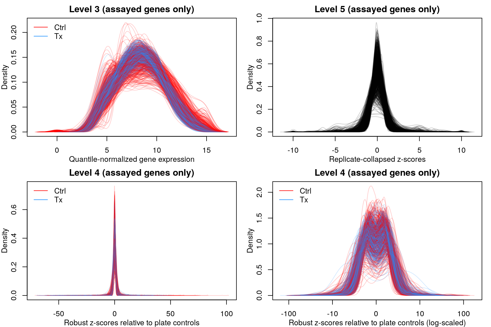
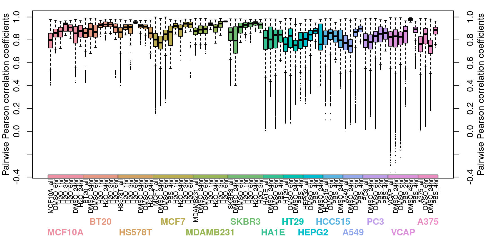
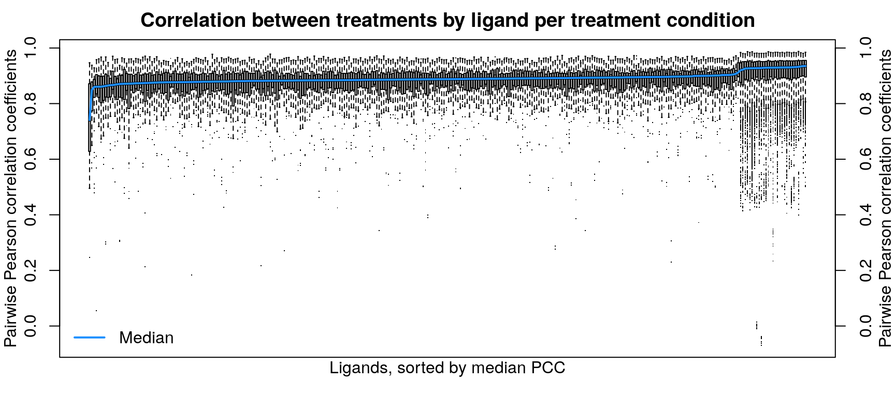
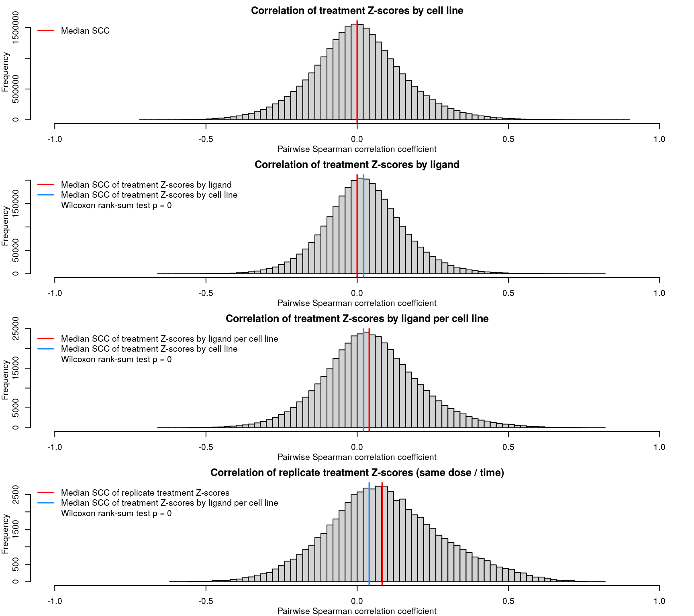

Sanity-checking Connectivity Map data
Data types
Connectivity Map releases their data at various stages of analysis. Level 3 data are quantile normalized gene expression data from the Lincs1000 assay, after gene expression inferrence - though we’re only considering the ~1000 assayed genes, not the inferred expression of the other ~10000. Level 3 data thus includes both control and treatment samples. Level 4 data are robust z-scores for differences in gene expression between treatment and plate-matched control, and level 5 amalgamates the level 4 z-scores to a single score per replicate.

Level 3 data (1000 random samples shown above) are normally distributed with a mean of 8 and a range between 1 and 15, while the level 4 & 5 data show Z-score distributions, with the range limited to -10:10 in level 5 data.
Sanity checking between samples
Level 3

Correlation between normalized transcriptomes within each cell type is pretty good, even across different control treatments (water, PBS, or DMSO for varying times). At the plate level the correlations are even better, for the most part. Treatments are compared to plate-matched controls, so consistent controls within a plate are important for downstream accuracy.


Cell type transcriptomes are similar to each other despite different ligand treatment, as one might expect. When comparing within each cell type, ligand treated transcriptomes show good consistency, which improves when taking into account dosage and duration of treatment as well.
Level 4

After calculating robust z-scores for the difference between ligand-treated transcriptomes and plate-matched controls (level 4 data), things get a little strange. One might expect the control z-scores to be poorly correlated, since there shouldn’t be any consistent signal - apart from cellular stress response from being handled. However, the control z-scores show better correlation than treatment z-scores, which are poorly correlated.
Level 5
As expected based on the level 4 data, the level 5 z-scores also show poor correlation.
Ligands used in the ligand treatment prediction model earlier are highlighted here, coloured by the accuracy of prediction where darker is higher accuracy. As one might expect, ligands that were easier to predict generally had more consistent z-scores, though there are exceptions.